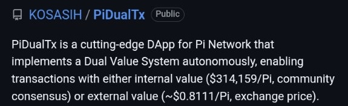
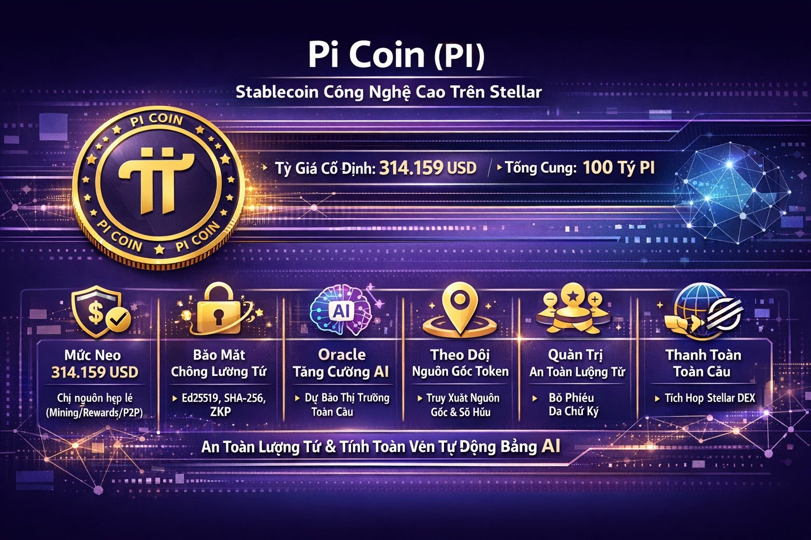

💱 Tiền điện tử (Cryptocurrency) là gì?
Tiền điện tử là dạng tài sản kỹ thuật số sử dụng mật mã để bảo mật và xác thực giao dịch. Chúng tồn tại hoàn toàn trong môi trường số, không có dạng vật lý như tiền mặt.
Các đặc điểm chính:
- 🔐 Phi tập trung – không có ngân hàng trung ương kiểm soát
- 🌍 Giao dịch toàn cầu chỉ qua Internet
- 💹 Có hàng ngàn đồng khác nhau như Bitcoin, Ethereum, Binance Coin, …
- 🛠 Được dùng cho thanh toán, đầu tư, xây dựng dApps, NFT...
Tiền điện tử là tương lai của tài chính phi tập trung và nền tảng Web3.
Các Dự án Tiền Điện Tử Miễn Phí
Hiện tại có rất nhiều dự án miễn phí mà bạn có thể đào trên điện thoại, có những dự án sẽ mang lại kết quả tốt, và một số dự án không hiệu quả. Do đó , chúng tôi chỉ tập trung vào một vài dự án mà chúng tôi tâm đắc nhất - theo quan điểm cá nhân, Những dự án chúng tôi đánh giá là có tiềm năng ở tương lai. Đã có nhiều cá nhân đi lên từ những dự án airdrop miễn phí này, mà có thể kiếm được lên đến vài trăm hay cả ngàn đô la, tuỳ thuộc vào dự án.Dưới đây chúng tôi xin giới thiệu một số dự án cơ bản và tâm đắc.PI NETWORK - Dự án tiền điền tử toàn cầu
Dù đã hình thành và phát triển 6 năm và trong thời gian qua có nhiều thông tin trái chiều, đả kích , sai lệch của một số người Nhưng dựa trên 7 năm kinh nghiệm trong lĩnh vực Tiền điện tử- Chúng tôi tự hào giới thiệu bạn về dự án hàng đầu trên thế giới . Để các bạn có cái nhìn chính xác , đầy đủ về tầm nhìn về Dự Án thế Kỷ.1. Lịch Sử Và Tổng Quan Về Pi Network
Pi Network được thành lập năm 2019 bởi hai nhà nghiên cứu từ Đại học Stanford: Nicolas Kokkalis (có nền tảng về blockchain và game hóa) và Chengdiao Fan (chuyên gia về thuật toán consensus). Mục tiêu ban đầu là làm cho việc đào crypto trở nên dễ dàng, tiếp cận với mọi người qua ứng dụng di động, mà không cần phần cứng mạnh mẽ như Bitcoin. Khác với các dự án đào coin truyền thống tốn năng lượng, Pi sử dụng mô hình “mining” giả lập, nơi người dùng chỉ cần nhấn nút hàng ngày để kiếm Pi mà không làm hao pin điện thoại.Phân tích các khía cạnh Chính của Pi Network:
- Việc Pi Network tuân thủ Đạo luật MiCA (Markets in Crypto-Assets ) của Liên minh Châu Âu là động thái nhằm hợp pháp hóa giao dịch Pi tại EU, nâng cao uy tín, tăng tính minh bạch , bằng cách nộp tài liệu pháp lý vào tháng 10/2025, chứng minh Pi đáp ứng yêu cầu tự lưu trữ (non-custodial), tuân thủ KYC/KYB toàn diện và phù hợp với tiêu chuẩn quốc tế như ISO 20022. Thị trường Châu Âu là nơi chặt chẽ , khắc khe nhất trên thế giới về quy định đối với tài sản Kỹ thuật số. việc tuân thủ Mica khẳng định được Vị thế dẫn đầu trong việc tuân thủ pháp lý, và hợp thức hoá trên toàn cầu của Pi network.
- Tên( Định Danh) : PI
- Tổ chức : PI NETWORK
- Tổng cung : 100,000,000,000 PI
- Lưu Thông : 8 tỷ
- Giá Trị cố định GCV( global consensus value) : 314,159 USD
- Giá trị bên ngoài ( external Value): thị trường
- Lưu ý giá trị này được hỗ trợ trong hệ sinh thái nội bộ sinh thái khổng lồ của Pi network( gồm các tổ chức tài chính, ngân hàng , các tổ chức doanh nghiệp đa dạng như samsung, Amazone, Tesla,Facebook, ...kể cả bao gồm các cá nhân kinh doanh nhỏ lẻ từ mắm , muối, ... vẫn tạo nên sức mạnh đồng thuận). Đồng PI hợp lệ sẽ được gắn huy hiệu riêng( gọi là PI tinh khiết) là các PI từ các nguồn như mine, phần thưởng và P2P. Còn các PI mua lại từ các nguồn khác như sàn dex sẽ không có huy hiệu PI tinh khiết và giá trị khi được chuyển vào hệ sinh thái : sẽ không áp dụng giá GCV, giá như giá thị trường quyết định.
Pháp Lý :
Tiêu chuẩn ISO 20022 là bộ tiêu chuẩn quốc tế được thiết kế để phục vụ việc giao tiếp trong các lĩnh vực thanh toán, chứng khoán, đầu tư cũng như thương mại quốc tế . Điều làm cho ISO 20022 có sức mạnh và phát triển nhanh chính là từ lợi ích mang lại cho toàn bộ các hạ tầng kết nối trong nhiều lĩnh vực liên quan đến ngành tài chính ngân hàng. ISO 20022 được thiết kế nhằm đơn giản hóa các giao tiếp thương mại trên toàn cầu và khắc phục những nhược điểm của các tiêu chuẩn trước đây đã và đang được sử dụng trong ngành tài chính ngân hàng.
Giá trị và Công Nghệ :

